Interactive timelines of systems, tools, and process improvements I’ve built across manufacturing and software environments.
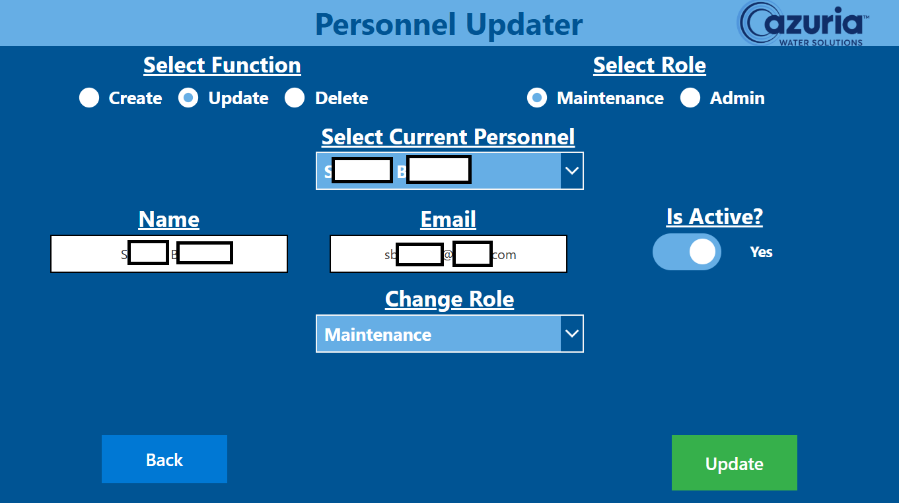
Full-stack operational system for inventory tracking, preventative maintenance and maintenance requests.
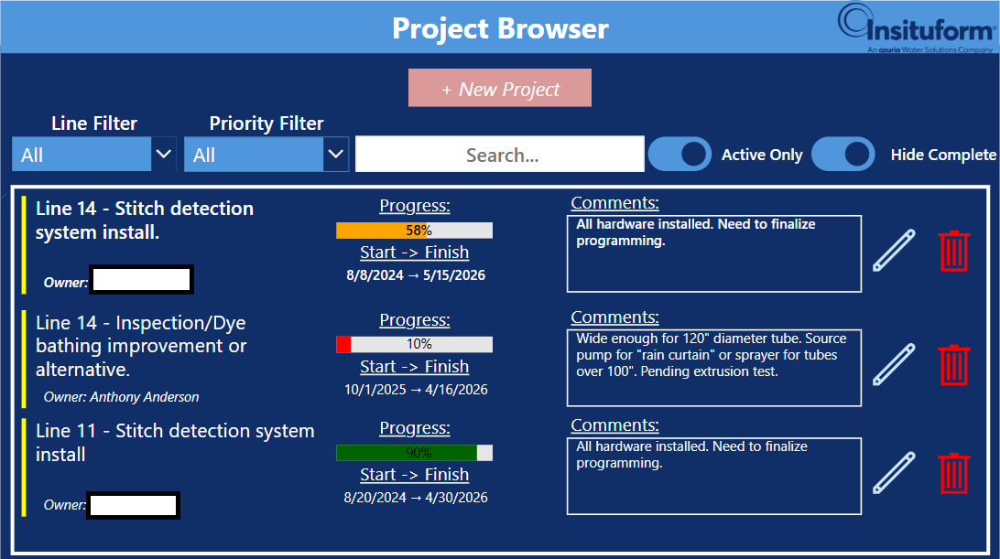
Digitized tracking system for engineering to organize, track and discuss projects.
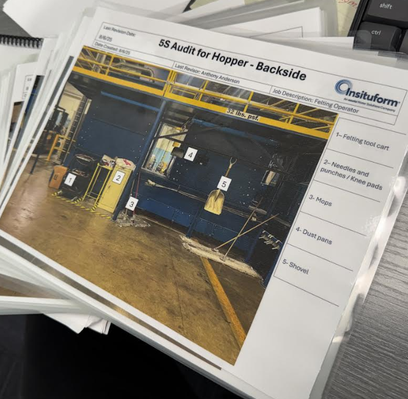
Workstation kaizen loop established for current state line organization.
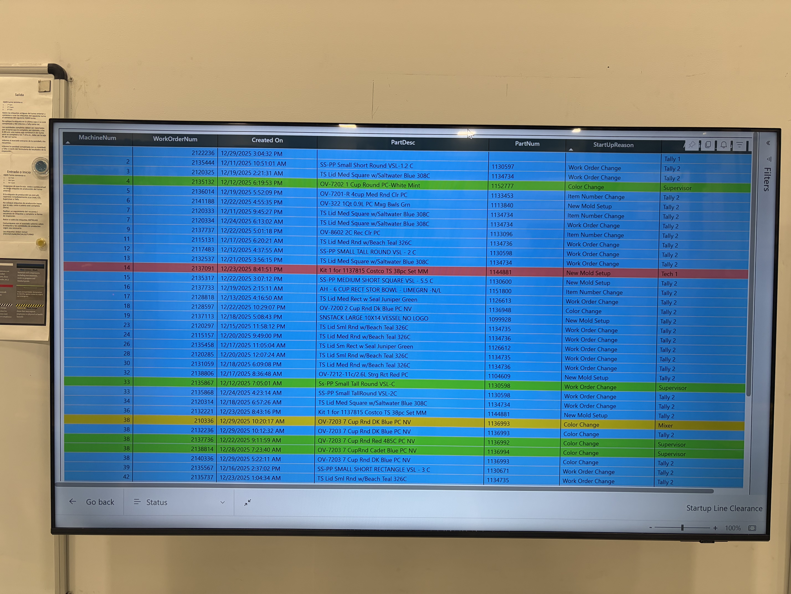
Full-stack program with multiple email chains to confirm a line is prepared to begin running a job.
End-to-end manufacturing capstone with design, assembly instruction, and financial data all from scratch.
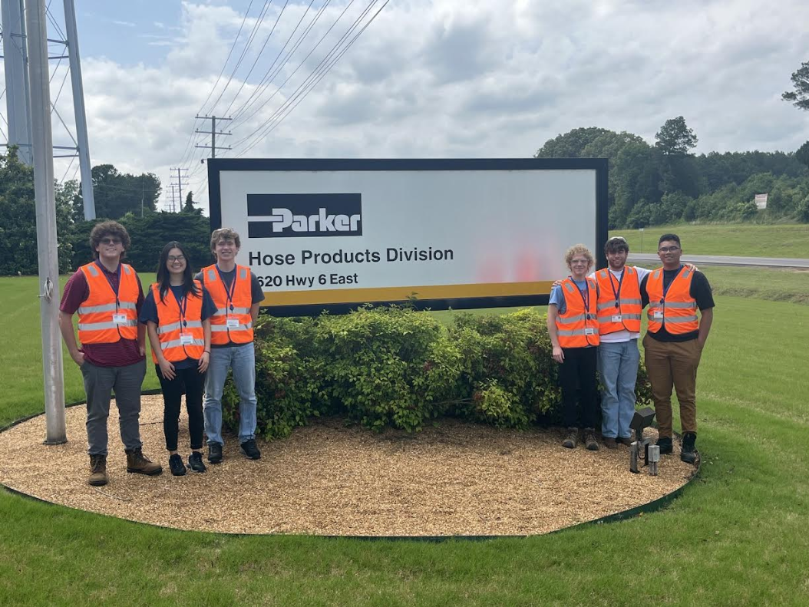
Team-based value stream mapping project focused on eliminating non-value-added time by proposing legitimate solutions.
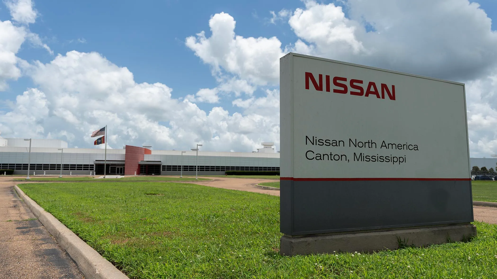
Two-team competition to see who can save the most money in a model car assembly process. (We won!)
Manufacturing-focused raw to finished product creation over several weeks of a custom tape dispenser.
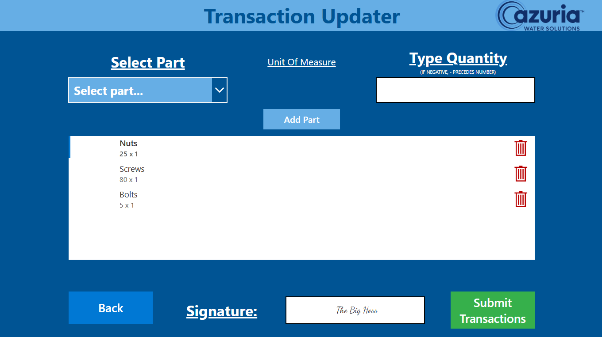
assets/imgAssignWO.png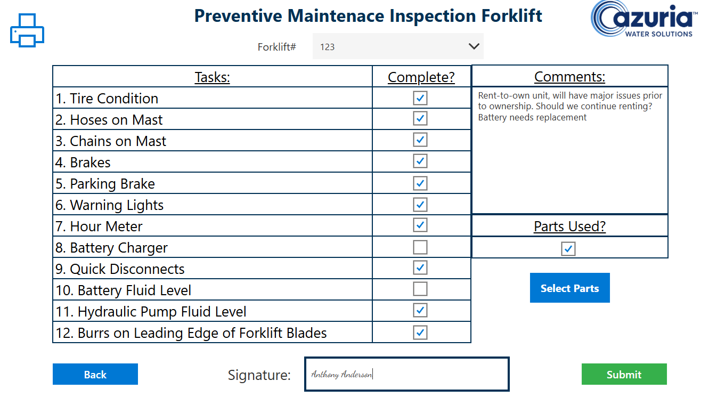
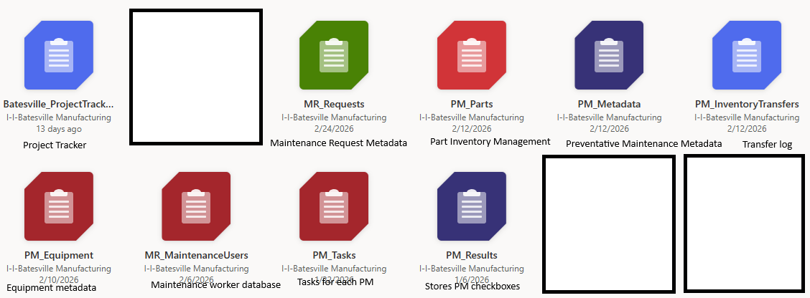
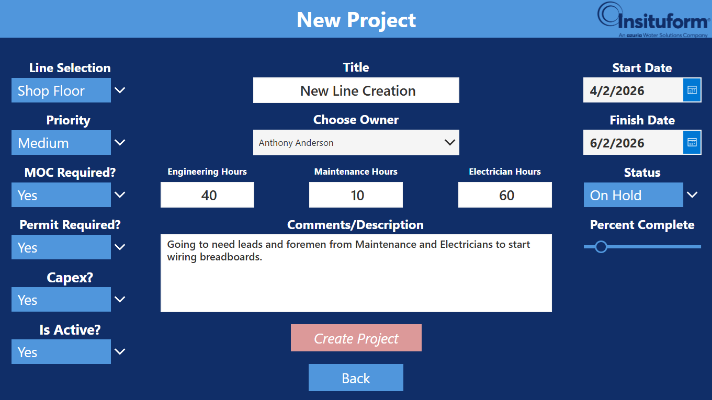
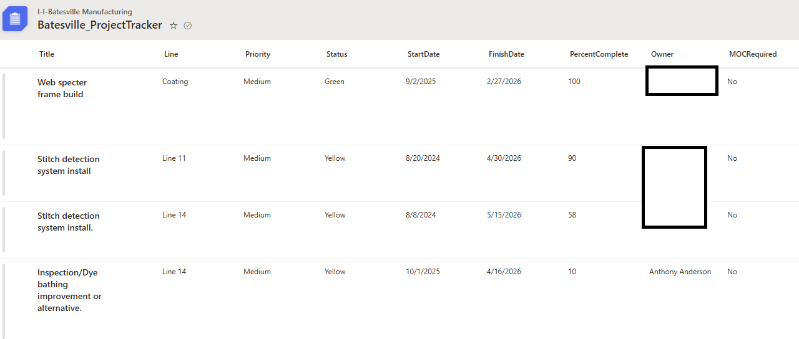
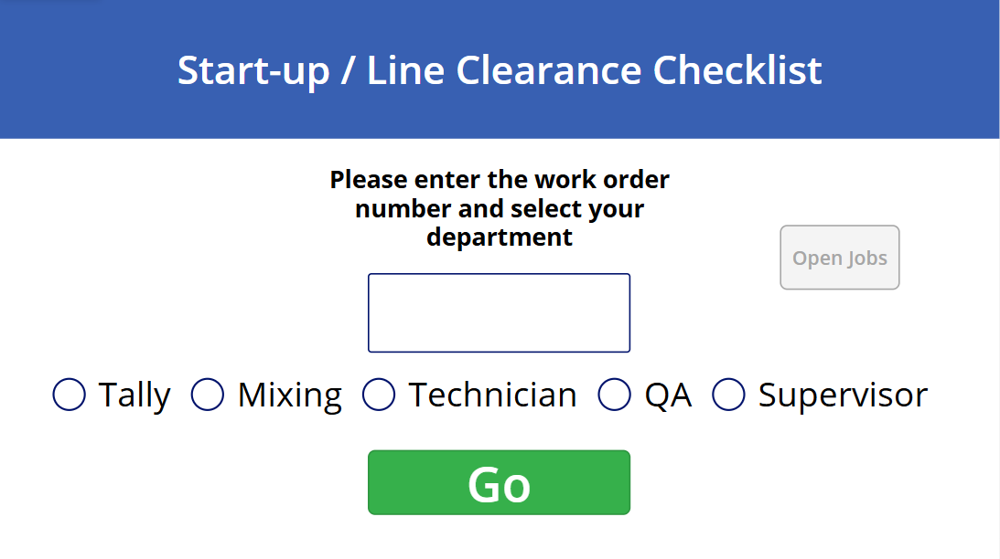
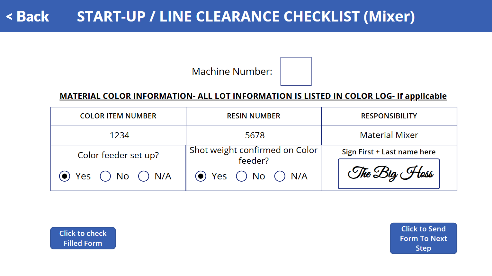
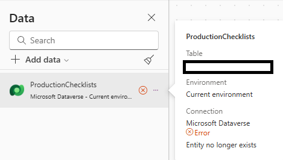
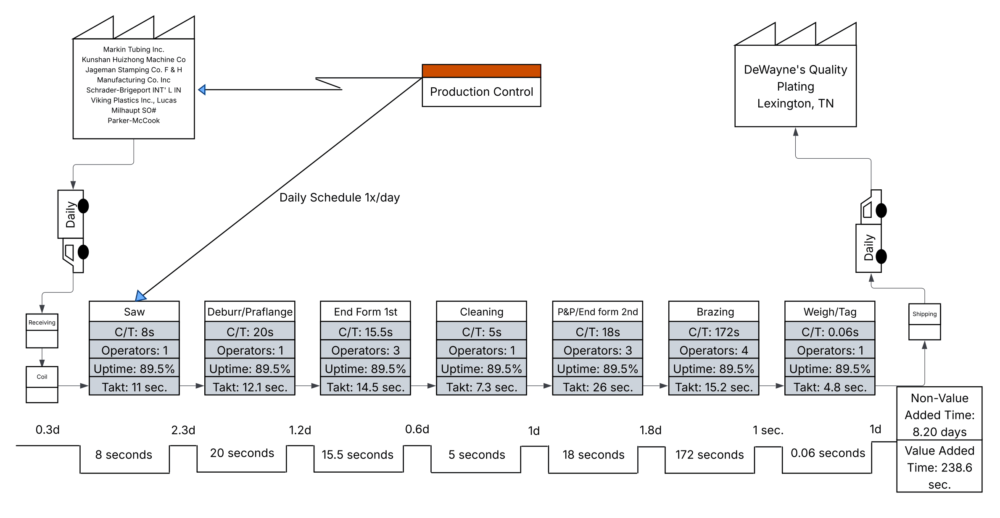
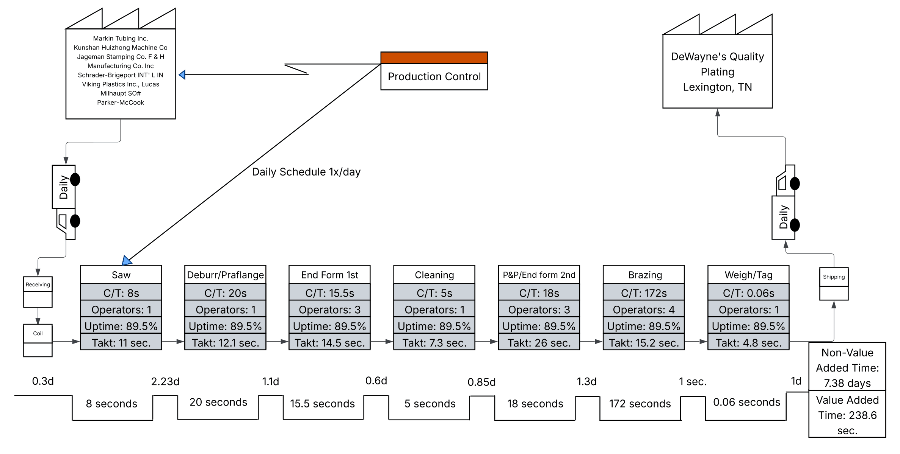
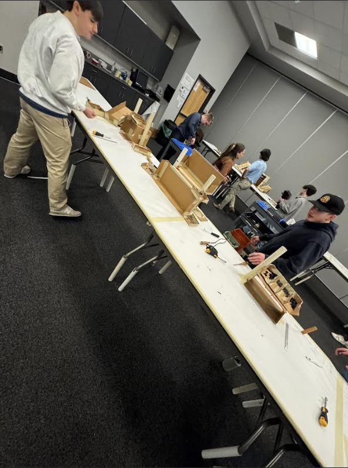